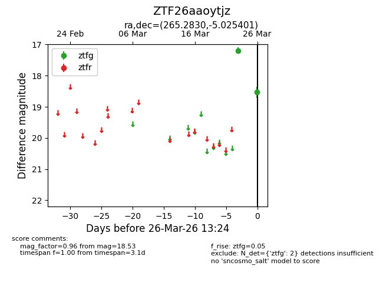
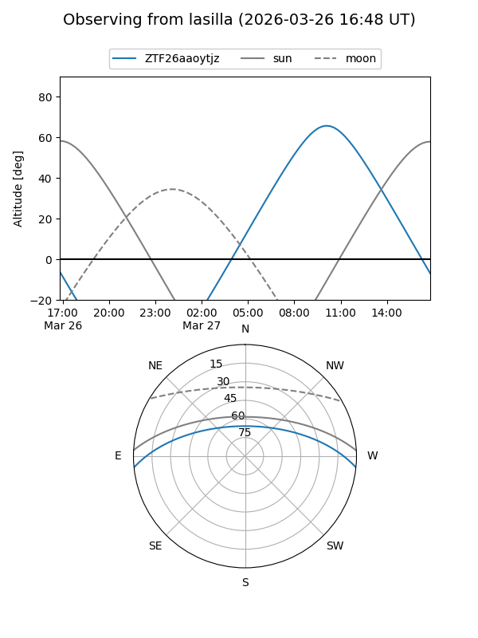
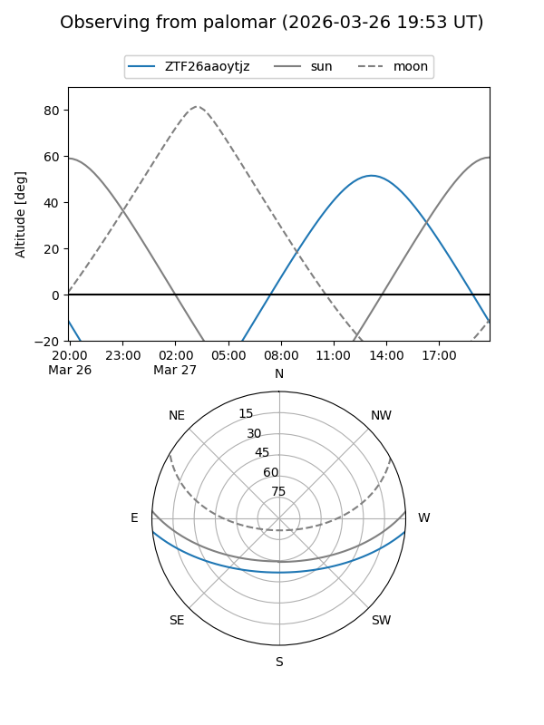

ZTF26aaoytjz
Target ZTF26aaoytjz at 2026-03-26 13:26
Aliases and brokers:
FINK: link
Lasair: link
ALeRCE: link
alt names
ZTF26aaoytjz (ztf,fink_ztf)
Coordinates:
equatorial (ra, dec) = 265.2830,-5.02540
equatorial (HMS+DMS) = 17:41:07.92,-05:01:31.44
galactic (l, b) = (20.1679,+13.16646)
Flags:
Photometry:
last ztfg=18.53
2 ztfg detections
Lightcurve

Visibility


Additional plots